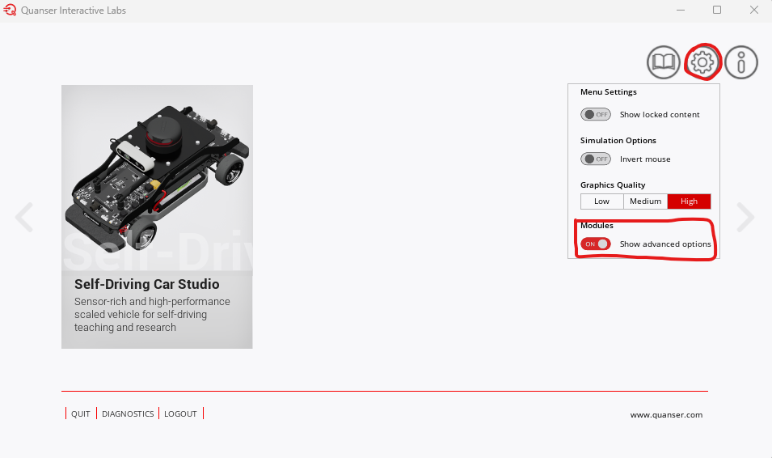
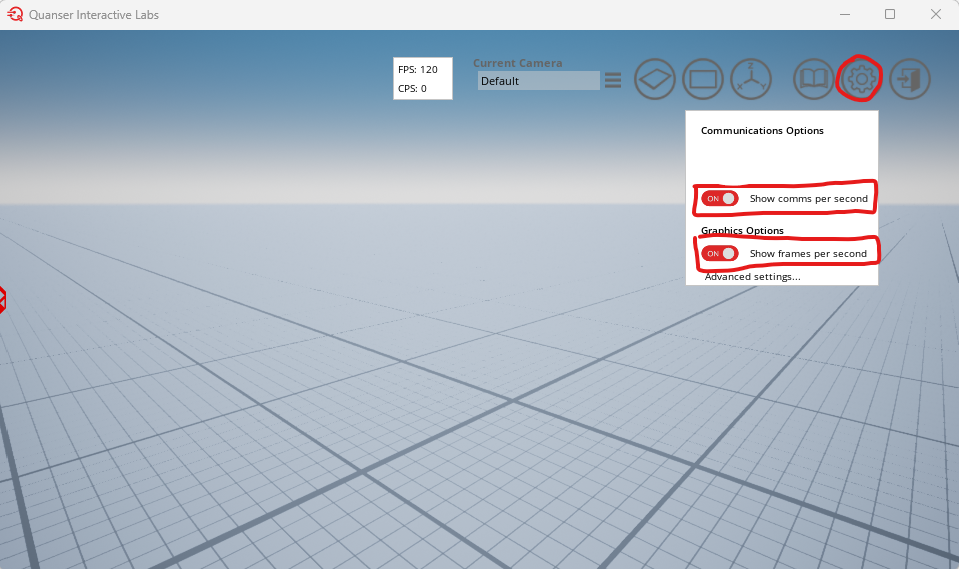

❓FAQ ❓
This FAQ is for questions that require a more detailed response and might be relevant to everyone. Also check the open and closed issues to see if your specific problem has been addressed.
- How can I reset the entire setup of my resources?
- QCar 2 won't spawn in the open plane
- Hardware requirements and performance expectations
- What are my camera intrinsics and extrinsics?
- What are the transformation matrices between the different sensors?
- Why is My QLabs Performance Low?
How can I reset the entire setup of my resources?
This is an important troubleshooting step since changes are constantly being made to the resources to fix different issues. Always try this as a first step if you are experiencing issues.
Please do the following:
-
Download
setup_linux.pymanually from here: setup_linux.py
-
Run
setup_linux.pybash python3 setup_linux.py -
Run the following command to uninstall all resources:
bash
sudo apt purge --auto-remove qlabs-unreal quanser-sdk quarc-runtime
-
Run the following commands to reinstall all resources:
bash wget --no-cache https://repo.quanser.com/debian/release/config/configure_repo.sh chmod u+x configure_repo.sh ./configure_repo.sh rm -f ./configure_repo.sh sudo apt updatebash sudo apt updatebash sudo apt-get install qlabs-unreal python3-quanser-apis quarc-runtime -
Update the Docker container:
bash docker pull quanser/virtual-qcar2:latest
Once you do this, try running the containers again and the nodes.
QCar 2 won't spawn in the open plane
This was previously caused by an error on the back-end of QLabs. This has since been fixed, but if you are still experiencing this issue it may be because your QLabs has cached your current session. Please try logging out and logging back in to fix the issue.
This can be caused by you not being logged in with the email address you used to register for the competition. Please talk to your team captain about which email address they submitted to the competition.
If it persists please raise an issue in the issue tab.
Hardware requirements and performance expectations
The development team has been testing the resources on an RTX 2060 Max-Q GPU, i9-10980HK, and 32GB of RAM. The performance that we receive is ~120fps and ~13cps when limiting the framerate to 200fps in the advanced graphics settings. These results were obtained when running all ROS2 nodes and spawning the QCar 2 in the Plane world.
To see the performance of your machine do the following:
- In the main page of QLabs click on settings
-
Turn on 'show advanced options':

-
Navigate to the Plane world in QLabs
-
Turn on 'show comms per second' and 'show frames per second' in the settings:

What are my camera intrinsics and extrinsics?
The following camera intrinsics and extrinsics can be used in your algorithms if necessary:
# CSI camera intrinsic matrix at resolution [820, 410] is:
[[318.86 0.00 401.34]
[ 0.00 312.14 201.50]
[ 0.00 0.00 1.00]]
# CSI camera distorion paramters at resolution [820, 410] are:
[[-0.9033 1.5314 -0.0173 0.0080 -1.1659]]
# D435 RGB camera intrinsic matrix at resolution [640, 480] is:
[[455.2 0.00 308.53]
[ 0.00 459.43 213.56]
[ 0.00 0.00 1.00]]
# D435 RGB camera distorion paramters at resolution [640, 480] are:
[[0 0 0 0 0]]
# D435 Depth camera intrinsic matrix at resolution [640, 480] is:
[[385.6 0.00 321.9]
[ 0.0 385.6 237.3]
[ 0.0 0.0 1.0]]
# D435 Depth camera distorion paramters at resolution [640, 480] are:
[[0 0 0 0 0]]
# D435 From RGB to Depth Extrinsics
# Translation is in meters
[[ 1 0.004008 0.0001655 -0.01474]
[-0.004007 1 -0.003435 -0.0004152]
[-0.0001792 0.003434 1 -0.0002451]
[ 0 0 0 1 ]]
Only the RGB to Depth extrinsics have been provided because it is useful when trying to align the RGB and Depth images.
What are the transformation matrices between the different sensors?
It is important to know where each of the sensors is with respect to each other so that data can be unified correctly. There are transformation matrices in the user_manual that tell this information. The user manuals for the QCar 2 are in the following directory:
cd /home/$USER/Documents/ACC_Development/backup/Quanser_Academic_Resources/3_user_manuals/qcar2
Why is My QLabs Performance Low?
If you are experiencing extremely low CPS in QLabs, this is a known issue. The dev team recieves a CPS of 11 when developing in the Development Container. The CPS drops significantly when more than 1 camera is initialized. Upon further investigation, this is caused by a performance limitation in the Linux version of QLabs. Here are the recommendations and guidelines that we can give:
- If your algorithm does not need more than 1 camera, modify the launch file to use only 1 camera.
- The
rgbdnode initialzes 2 cameras by default. Please keep this in mind and manage your performance expectations when using this node. - Your CPS is better when you limit your FPS in QLabs.
- An alternative option is outlined below.
Having a low CPS can affect the stability of control algorithms when the QCar 2 is moving at faster speeds. The judging team for the first stage will be keeping this performance issue in mind when evaluating the video submissions. It will be more important to the judges if you describe how your algorithm works and show it in action (no matter how slow) in the video submission. These algorithms will be validated when the judges review your code too.
If you are selected to move to Stage 2, these constraints to reading the cameras will not be an issue on the physical QCar 2.
To further address the issue, the development team is providing an alternate Python script that spawns a QCar 2 with a different RT Model. This new method will improve the CPS, but reduce the effective FPS of the cameras. It will interleave the cameras if multiple cameras are used. It will work as follows:
- With 1 camera there is no effect, the camera will operate at 30 FPS and 30 FPS will be received by the ROS nodes.
- With 2 cameras each camera will send 15 FPS.
- With 3 cameras each camera will send 10 FPS.
The ROS nodes will always think they are receiving 30 FPS even if the effective framerate is lower. For the 2 camera example, each camera will send an effective framerate of 15 FPS and the ROS nodes will receive 30 FPS, but every frame is duplicated (i.e. each frame sent from QLabs persists for 2 frames on the ROS side). Please keep this in mind when you are using algorithms that are expecting camera information at 30 FPS.
An additional effect of this is that the camera frames sent by QLabs are staggered. In other words for the 2 camera setup, QLabs is operating at 30 FPS but sends a frame from Camera #1 first then in the next cycle camera #2 will send a frame. Camera #1 and Camera #2 alternate between sending frames, hence the staggering effect. The result of this is that the ROS nodes receive camera information that is out of sync by 1/30th of a second. Please keep this in mind when you are utilizing camera information for your algorithms.
To use this interleaved method, look for the scripts that have interleaved in their name within the Quanser Virtual Environment container!
root@username:/home/qcar2_scripts/python/Base_Scenarios_Python/#
L Setup_Competition_Map_Interleaved.py
L Setup_Real_Scenario_Interleaved.py
L ...